4141
Spend Carefully
Spend Carefully
List out the members of your family who earn income?
Let us examine some other contexts in which families earn
income.
1.
A certain amount deposited in bank
2.
Renting out owned buildings
3.
Runs industrial unit profitably
4.
Working as insurance agent
Interest from bank deposit, rent from building, profit from
industrial unit, commission from insurance agency are income
for families.
See the word web depicting different sources of income of
families.
Families earn income from different sources such as bank
deposit, business, agriculture, industry, land and other
properties, services etc. Thus, earnings of family members
from different sources are the income of the family.
Wage
Profit
Salary
Commission
Rent
Family
Income
Construction work
Government service
Bank deposit
Mahila Pradhan Agent
Interest
Business
Renting out
What are the income generating sources of your
family?
Page 41
Page 42
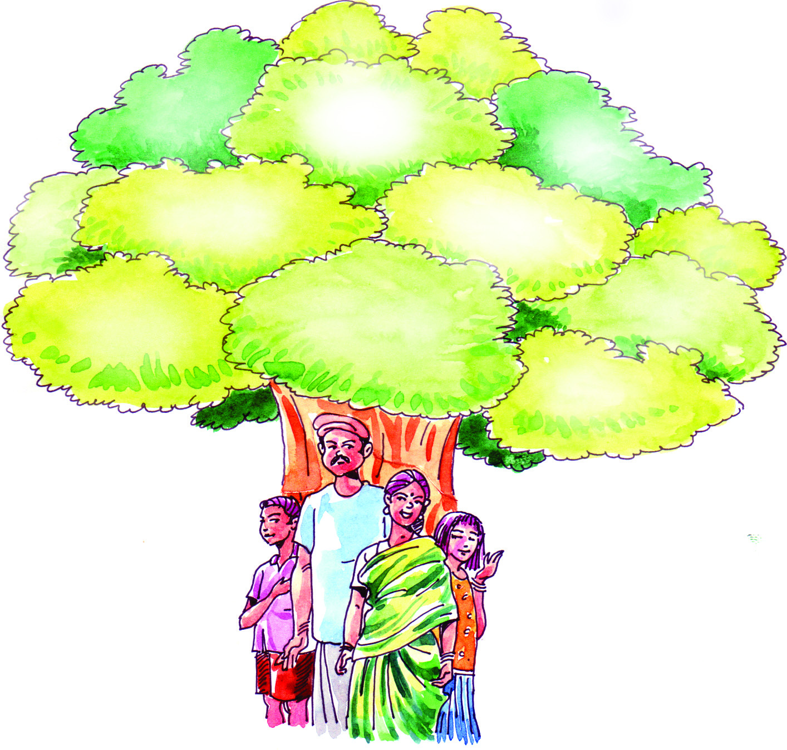
4242
Social Science V
Social Science V
Diverse Expenses
The common requirements and personal demands of each
member of the family are met with the income generated
through different sources. All the requirements of a family
do not have equal preference. Some are very urgent and
essential. Some others are good, if met with. The rest does not
pose a problem, even if not met with. The family requirements
should be prioritised based on family income. Expenses need
to be co-ordinated accordingly.
See the picture depicting major expenses of a family. You can
identify the major expenses of a family from the diagram. Think
of the other possible expences of this family and write them
down in the spaces provided.
Among these expenses, some are meant to meet day to day
requirements. Some others are to meet particular
requirements. Expenditure on food, clothes, loan repayment
are expected expenses. Unexpected events may occur in our
life. Accidents, natural calamities and diseases are unexpected
events which lead to unexpected expenditure. A part of our
income may be kept apart to meet such unexpected expenses.
Food
Purchase of
clothing
Travel
Treatment
Loan repayment
Page 43
4343
Spend Carefully
Spend Carefully
Economic Security
Expenses exceeding income will lead to economic crisis in the
family. When expenses are less than income, there will be
surplus. This surplus is the saving of a family. Saving plays a
vital role in economic security. Economic security means
maintaining higher standard of living and the ability to meet
expenses likely to incur in future. We can attain economic
security through better management of family income.
The following three states can be observed on examining the
income and expenses of families.
•
Expenses and income are equal
•
Income more than expenses
•
Income less than expenses
-
In which context, can we have surplus?
-
Which context ensures economic security?
-
Is it desirable to control expenses for ensuring economic
security?
Habit of Thrift
Now-a-days, several
products are available
in the market. There
are advertisements
persuading people to
buy these products.
Influenced
by
advertisements, we purchase excessively and this leads to
increased expense.
"The world has enough
for everyone's need, but
not enough for everyone's
greed".
- Gandhiji
Page 44
4444
Social Science V
Social Science V
We should have the sense to buy good quality essential
products without falling into the temptation of advertisements.
Thrift is the habit of spending our income effectively to meet
our desired requirements. Thrift should be a part of our life
style. Thrift helps to ensure economic security. Simple life style
is essential for thrift.
All members of a family should practice thrift. As a student,
what can you do to ensure thrift?
•
Avoid luxury goods
•
Produce food grains, vegitables and fruits that can be
cultivated at home.
•
You may find and add more to the list.
Family-Income and Expenditure
See the income and expenditure of a family for a month.
Salary
Income from
Properties
20,000
1,000
Particulars
Amount
Particulars
Amount
Income (Rs)
Expenditure (Rs)
21,000
Total
Rice & Grocery
Vegetables
Milk, fish
Telephone, news paper
Electricity charge
Clothes
Education
Medical expenses
Travel
Loan repayment
Insurance
Other expenses
4,000
2,000
3,000
1,000
900
1,000
500
2,000
3,000
3,000
2,000
1,000
Total
23,400
Page 45
4545
Spend Carefully
Spend Carefully
What can you infer from the analysis of the given data on the
income and expenditure of this family? Make use of the
following indicators:
•
Total income and expenditure of the family
•
Measures that can be taken by the family to ensure
economic security
Families may not always keep records on their income and
expenditure. But they can ensure better life if they anticipate
income and expenditure. Keeping records on the estimated
income and expenses of a family can be called a family budget.
Let us examine the benefits of preparing a family budget.
•
Co-ordinate expenses in accordance with the income
•
Requirements can be prioritised and met with accordingly.
•
The need for thrift and saving can be realised.
Income and expenditure of all families are not the same. Family
budgets depend on the variation in income and expenses of
each family. Around us we see families with high and low
income. This leads to economic disparity among families. The
Central and State Governments have been implementing
various programmes for minimising this economic disparity.
Activity Budget
Just like family budget, each and every organization or
institution around us too have budgets. Likewise, activity
budgets can also be prepared. A budget prepared for a
particular activity or a programme is called activity budget. A
budget prepared for your study tour is an example of an
activity budget.
Page 46
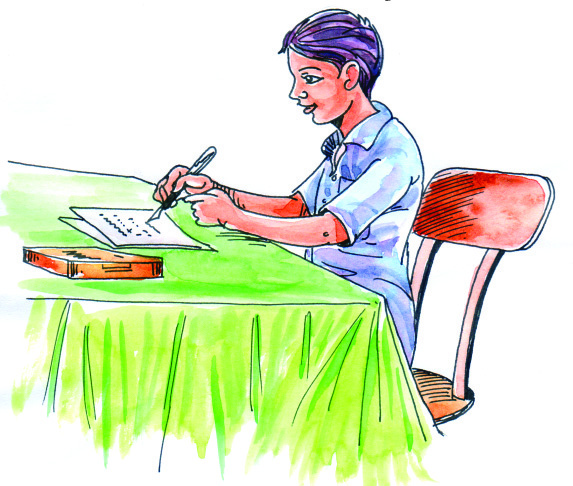
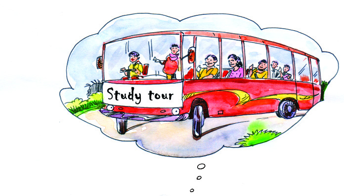
4646
Social Science V
Social Science V
Activity Budget - Study Tour
Income (Rs)
Expenditure (Rs)
Particulars Amount Particulars Amount
$
$
$
$
$
$
Total
Total
Using the format given below,
prepare a budget for a one day
study tour organized by the
Social Science Club.
Local self government bodies such as Panchayats,
Municipalities and Corporations have budgets. There are
budgets for the Central and State Governments. The Central
and State Governments present the expected expenditure in
the budget by calculating the anticipatory expenses and
identifying sources of revenue to meet with. In India, financial
year is the period from Ist April to 31st March. The Central and
State Governments prepare annual budgets for every financial
year.
Summary
•
Employment is a source of income for families.
•
Sources of income are diverse.
•
Requirements of families are met with income.
•
Controlling expenses helps economic security.
•
Thrift is advisable for economic security.
Page 47
4747
Spend Carefully
Spend Carefully
•
Income and expenditure of all families are not alike.
•
There exist economic disparity among families.
•
Union Government, State Governments, Local self
governments, other institutions and organizations present
budgets.
Source of Income
Income
• Road construction
• Business
• Government service
• Bank deposit
•
Describes different sources of income of families.
•
Explains the importance of saving.
•
Discusses the importance of thrift in ensuring economic
security.
•
Makes thrift a life style.
•
Analyses family budget and understand its relevance.
•
Distinguish and describes the existence of economic
disparity among families.
•
Analyses that the Union and the State Governments have
budgets.
Let us assess
1.
Among the following, which is not a source of income ?
•
Government job
• Agricultural job
•
Household job
• Doctor's job
2.
Complete the table
Significant learning outcomes
Page 48
4848
Social Science V
Social Science V
3.
Prepare a note on the importance of practising thirft in a
family.
4.
Suggest two ways to ensure economic security.
5.
'Thrift should become a part of life'. Elucidate your
opinion.
6.
Explain the reasons for variations in family budgets.
7.
As students, suggest areas where you can practice thrift.
8.
Identify and state the important features of government
budgets. Which of the following is the important feature
of the government?
• Arrange expenditure in accordance with revenue.
• Practice thrift.
• Determining expenditure in advance and finding ways
to generate the desired revenue.
• Balancing revenue and expenditure.
Extended activities
•
Prepare a monthly budget of your family in consultation
with your parents.
•
Interview the local self government representative of your
locality and prepare a note on their budget related activities.
Page 49
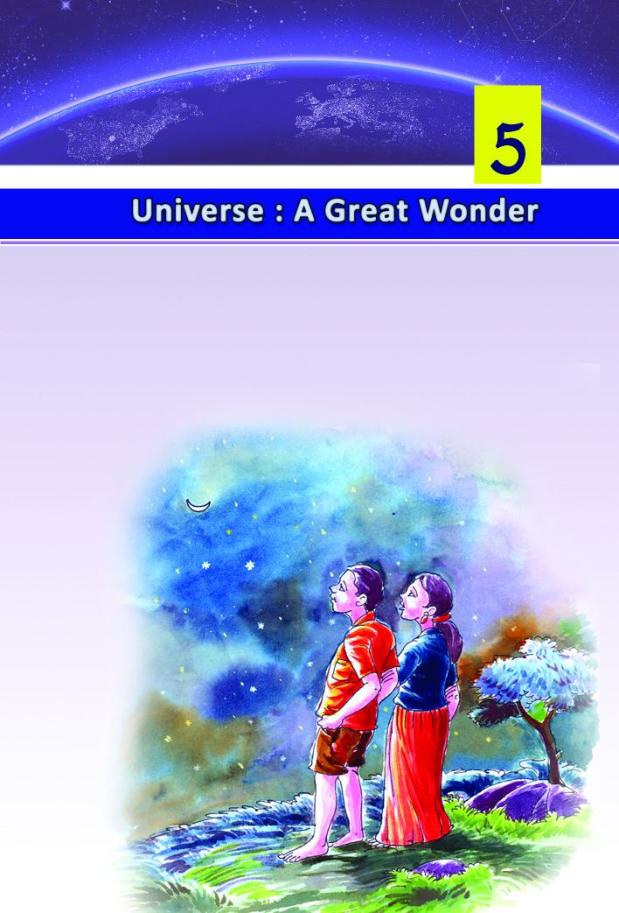
Clear night with the Moon amidst the twinkling stars...
Shooting stars flashing occasionally...
These night scenes have generated curiosity and anxiety in
mankind since ancient times.
Page 50
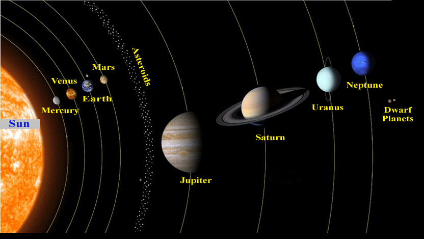
Social Science V
Social Science V
50
50
Are these stars far off? Are there only the Sun, the Moon and
the stars in the sky? How many such doubts have sprouted in
the minds of human beings since then! Aren't you interested
to know about such astonishing night scenes? This lesson takes
you to these wonders.
Aren't you the member of a family? Just like you, the earth is
also a member of a family. Solar system is the family in which
the earth is a member.
Solar system
Observe the diagram below that depicts the solar system (Fig
5.1). What do you see at the centre of the solar system? Isn't it
the sun? Sun is a star. Stars are giant celestial bodies that burn
by themselves. Stars emit heat and light in large quantities.
Fig. 5.1
Solar System
Page 51

51
51
Universe : A Great Wonder
Universe : A Great Wonder
Do you notice the celestial bodies that revolve around the Sun?
Which are they?
• Mercury
• Venus
• Earth
• Mars
• Jupiter
• Saturn
• Uranus
• Neptune
The celestial bodies that rotate themselves while revolving
around the Sun are called planets.
Identify the paths of planets shown in the given figure (Fig
5.1). The path of a planet around the Sun is called orbit.
Satellites are celestial bodies that revolve around the planets.
Moon is the satellite of the earth.
Now arrange the planets on the basis of their distance from
the sun. Softwares like K-Star and Stellarium in your school
Social Science lab will be of more help for this.
•
Mercury
•
Nicolaus Copernicus
1473 - 1543 AD
Copernicus was a geoscientist and astronomer
from Poland. Ancient belief was that the earth
was the centre of the solar system. Copernicus
questioned this belief. He announced to the
world that the Sun is at the centre of the solar
system.
Page 52
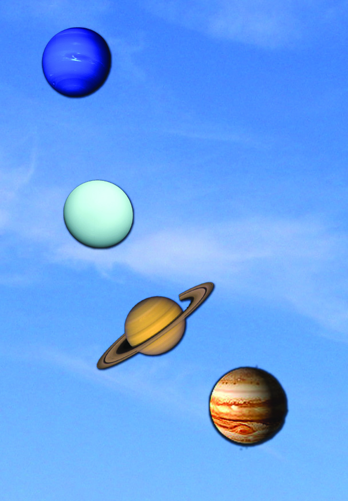
Social Science V
Social Science V
52
52
• More than a dozen satellites
• 164 years to revolve around
the sun
Neptune
• More than 25 satellites
• 84 years to revolve around
the sun
Uranus
• Has rings around
• More than 30 satellites
Saturn
• Biggest planet
• More than 60 satellites
• 12 years to revolve around
the sun
Jupiter
Planets in the
Page 53
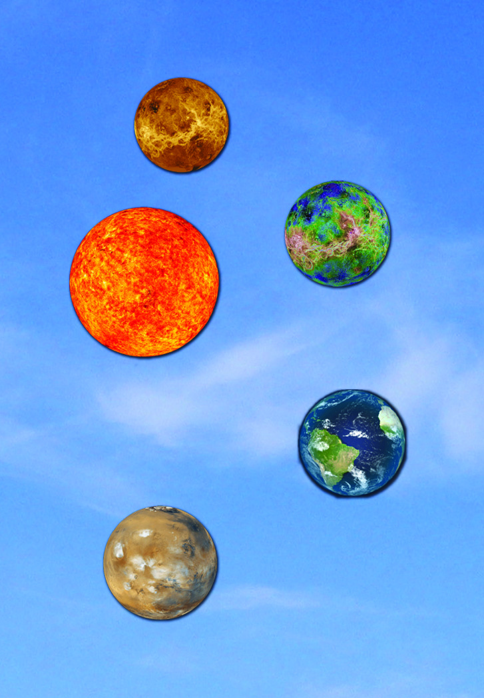
53
53
Universe : A Great Wonder
Universe : A Great Wonder
• Blue in colour when viewed
from space
• The only planet where life is
found to exist
• One satellite - Moon
Earth
• Brightest planet
• Hottest planet
• No satellites
Venus
• The only star in the solar system
Sun
Solar System
• Two satellites
• Traces of water flow in ancient
times discovered
Mars
• No satellites
• Smallest planet
Mercury
Page 54
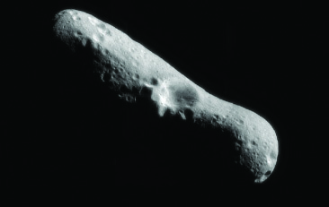
Social Science V
Social Science V
54
54
Galileo Galilei : 1564 - 1642 AD
Italian physicist, astronomer, mathematician and
philosopher. Started observing sky with a self-made
telescope. Discovered four satellites of Jupiter.
Fig. 5.2 Asteroid named Ida
• Uranus is the rolling planet in the solar system. While all the other
planets spin like top, Uranus spins like the wheel of vehicles.
• If you are planning to go to Venus, don't forget that the Sun rises in
the west there!
• In the Moon, stars are visible during day time also.
Amazing Facts
Identify the other members of the Solar System from the
diagram (fig 5.1)
•
Asteroids
•
Dwarf planets
The rock fragments revolving around the Sun in between Mars
and Jupiter are the asteroids. On rare occasions they come
towards the Earth and pose threat to the Earth.
Page 55
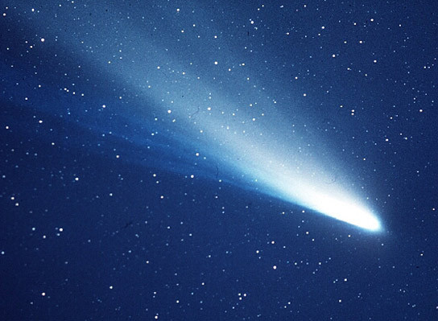

55
55
Universe : A Great Wonder
Universe : A Great Wonder
For a celestial body to be
considered as a planet, it
should have spherical
shape, should revolve
around the sun and should
have its own obstacle free
orbit. The celestial bodies
which do not follow these
conditions set by the
International Astronomical
Union (IAU) are called
'Dwarf Planets'.
Guests in the Solar system
The Expelled Pluto
Pluto was considered a planet till
very recently. The International
Astronomical Union (IAU) withdrew
its status and declared Pluto as a
dwarf planet in August 2006. Such
a decision was due to the fact that
Pluto crosses the orbit of Neptune
and revolves around its own satellite
namely Charon.
Fig. 5.3 Halley's Comet
Comets are rare visitors to the solar system. They are lumps
of cosmic dust and snow particles. Their tail is formed as
they approach the sun and it glows in the sun light. Though
they revolve around the sun, they come close to the sun very
Page 56
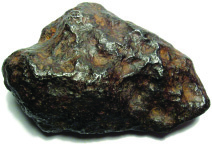
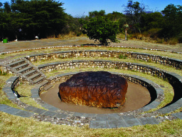
Social Science V
Social Science V
56
56
rarely. The length and the brightness of the comet's tail increase
as it approaches the Sun. Do you remember the comet ISON
which arrived by the end of 2013? It rushed towards the Sun
and will never return.
Meteoroids
Haven't you noticed light beams flashing in the sky during
clear nights? These disappear in no time before one can show
it to another person. Such rock fragments of various size, which
enter into the earth's atmosphere are called meteoroids.
Meteorite fallen in the
Chinke river side in Russia
Meteorite fallen in Namibia (Africa)
Fig. 5.4
They burn due to friction with air on entering into the
atmosphere. This is the flash that we see in the sky. The
unburned remains of the meteors falling on the earth are called
meteorites.
You have learned that the solar system includes the Sun, the
planets revolving around the Sun, their satellites, asteroids,
comets and the dwarf planets.
Page 57
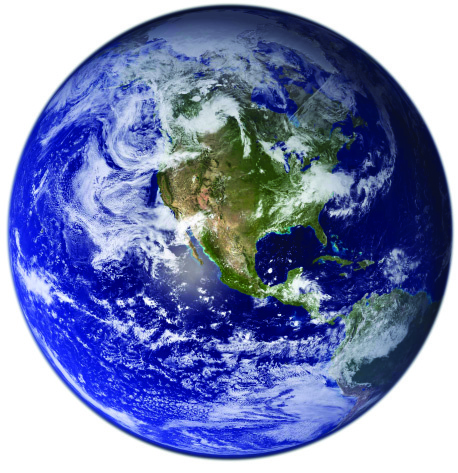
57
57
Universe : A Great Wonder
Universe : A Great Wonder
List out the members of the solar system.
• Sun
•
•
•
Earth, Our Planet
The earth is the only planet where life is found to exist. Vast
expanse of surface water reserve exists only on the Earth. When
viewed from space, the Earth's colour appears to be pale blue.
This is due to the fact that two third of the Earth's surface is
covered with water.
It is our duty to protect the wealthy diversity of nature in
terms of air, water, soil and life forms.
The World of Stars
The Sun is the closest star to the earth. As the Sun sets, the
other stars start twinkling one by one. As the night grows
Page 58

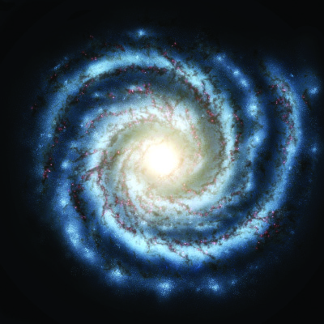
Social Science V
Social Science V
58
58
darker stars become countless. Crores of stars make a galaxy.
The galaxy which includes the Solar System is the Milky Way.
It is also known as 'Akasha Ganga'. It contains nearly ten
thousand crore stars.
The universe was a tiny ball crores of years ago! It is
believed that the universe expanded to the present form by
a violent explosion.
Fig. 5.5 Milky Way
Universe
Universe includes millions of galaxies. What would be its size
then! It is beyond our imagination, isn't it?
The news regarding the celestial bodies and the universe appear
very often in the dailies. Collect and paste them in a notebook.
Page 59
59
59
Universe : A Great Wonder
Universe : A Great Wonder
Continue this activity throughout the year. This collection can
be named as 'My Universe Book'.
The Milkyway is one among the nearly ten thousand crore
galaxies which contains crores of stars, of which the Sun is the
one around which the eight planets revolve, of which earth is
the one, where our country is located, in which our state of
Kerala is, in which my beautiful land is, ....
However, with his unending thirst for knowledge, inquisitive
mind and with his hard work, man is able to understand the
secrets of the universe.
Summary
•
The universe includes crores of galaxies.
•
Galaxies contain crores of stars.
•
Milky way is the galaxy containing the solar system.
•
Solar system includes the Sun, the planets and their
satellites.
•
Sun is at the centre of the solar system.
•
Asteroids, dwarf planets and comets are also part of the
solar system.
•
Earth is a member of the solar system.
•
The earth is the only planet where life is found to exist.
•
Man is one among the millions of life forms on the Planet
Earth, which revolves around the Sun, which is a small
star in this gigantic universe.
Significant learning outcomes
•
Explains the features of the solar system.
•
Picturises sequentially the planets in the solar system.
•
Describes the universe, the milky way, the Solar System,
which is part of it and the Earth, a member of the solar
system.
Page 60
Social Science V
Social Science V
60
60
Let us assess
1.
Identify the position of asteroids in the solar system.
a.
between Mercury and Earth
b.
between Earth and Mars
c.
between Mars and Jupiter
d. between Mercury and Venus
2.
Meteorite fall on the earth is not as frequent as on the
Moon - Why?
Extended activities
•
India has a wealthy tradition in astronomy from ancient
times. Try to identify the contributions of great astronomers
in India, starting from Aryabhata and Varahamihira to the
modern astromers like Subramanyam Chandrasekhar.